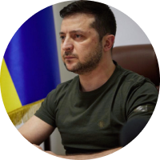

Минуле
Формування ментальності українців

Люди землі
Ми - хлібороби. На СВОЇЙ землі господарюємо, сворюємо, дбаємо про оселю

Громади
Ми з покон-віків - громади, які включають об’єднання індивідуальностей

Історія
Фольклор розповідає правду,бо ми учасники, творці історії та представляємо її, так як є

Творчість
У нас колядки, щедрівки, де возвеличують господаря, господиню, урожай
Українське козацтво - унікальне явище в історії
Козаки - це державність!
Саме козаки були авторами та реалізато-
рами ідеї
української держави та її легіти-
мації у міжнародній спільноті як незалежної держави

Цінності
Відвага, вірність, здатність до самопожертви, любов до Батьківщини
- такі характе-
ристики успадкував укра-
їнський народ у козаків
Відвага та безстрашність
Турецький літописець Наїма писав про запорожців: “Можна впевнено сказати, що неможливо знайти на цілій землі сміливіших людей, які так мало б дбали про мвоє життя і так мало боялися смерті”
Прагнення до неба
Блакитне небо на прапорі України та жовте жито, ще одна ознака нашого прагнення думками відірватися від землі та полетіти в безкрайнє небо, вийти за межі простору.
Саме тому українці реалізовували прагнення вийти за межі за допомогою розвитку авіаконструкторських заводів.
Підприємство "Антонов" створило гордість України, який став сиволом українського непереможного духу - "Мрію" - найбільший транспортний літак у світі.

Сьогодення: період трансформації
Хто ми сьогодні?
Ми показуємо усьому світові як говорити правду в очі та бути вірним своєму народу, своєму вибору та стояти за нього - ми чесні з собою та іншими, відважні та стоїмо один за одного
Ми подаємо приклад всьому світові, як жити в умовах невизначеності, та ще й знаходимо в собі сили підказувати іншим, що робити для підтримки миру у всьому світі - ми креативні.
Ми не піддаємось залякуванню та продовжуємо маленькими кроками досягати своєї мети - ми сильні духом, в нас є воля. Свобода - найбільша цінність для нас.
Ми можемо жити без вказівок, та самоорганізовуватись, спираючись лише на гуманістичні, людські цінності - ми за мир у всьому світі, і ми зможемо показати, як цього досягти.
Продовжуємо жити, працювати та надихати весь світ!


"Вчора ми втратили, на жаль, нашу "Мрію". Але стару "Мрію". А нову ми зараз будуємо. Слава Україні!"
Діджиталізація в Україні
В період трансформації Україна продовжує розквітати вже в новому, цифровому світі

Україна першою у світі запустила юридично легалізовані цифрові паспорти

На порталі "Дія" доступні онлайн вже понад 70 державних послуг, зокрема реєстарція ФОП

Україна займає четверте місце у світі за частотою оплат мобільними пристроями

Україна легалізувала криптосектор і посідає четверте місце за кількістю користувачів криптовалютою

Україна посідає перше місце у світі за внеском у науку та технології

Україна займає перше місце серед східноєвропейських країн за ІТ-аутсорсингом та науково-дослідницькою роботою
Майбутнє
Майбутнє України - це її люди!

Україна зможе зформулювати свої ціннісні орієнтири та транслювати їх на весь світ, а саме: Можливо все, навіть те, у що ви не вірите! А вихід за рамки самого себе - це більш гуманістично, ніж постійно прагнути вийти за рамки технологічного розвитку

Українці, як нація, стають зразком волевиявлення та прикладом побудови демократичних відносин не ”згори донизу”, а “знизу догори”!

Україна стає найбільш популярним та поширеним символом свободи, віри, правди та сміливості у всьому світі. Все буде Україна!

Україна запрошує до першого в світі проекту колективної відбудови країни, в якій будуть задіяні ініціативи різних країн світу. Таким чином Україна дає можливість всьому світові відчути, що таке колективна стратегія та транслює нову етику відносин в світі

Україна згадає про своє прагнення до неба та сонця, й запропонує новий проект: щоб закінчити війни на Землі, давайте будемо співпрацювати для нашого нового життя в космосі
Ми - нація вільних людей, які будують нову свою країну!


Українці про Україну

Україна – це вічність, не тільки сьогоднішня, але передусім майбутня й минула.

Україна – це вічність, не тільки сьогоднішня, але передусім майбутня й минула.

Україна – це вічність, не тільки сьогоднішня, але передусім майбутня й минула.

Україна – це вічність, не тільки сьогоднішня, але передусім майбутня й минула.

Україна – це вічність, не тільки сьогоднішня, але передусім майбутня й минула.

Україна – це вічність, не тільки сьогоднішня, але передусім майбутня й минула.